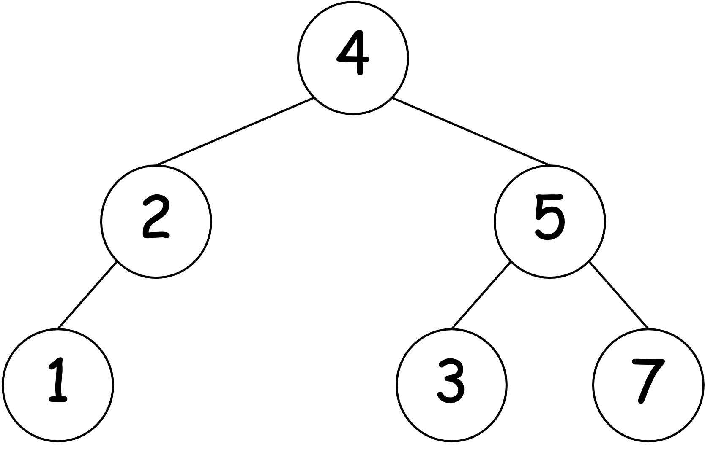
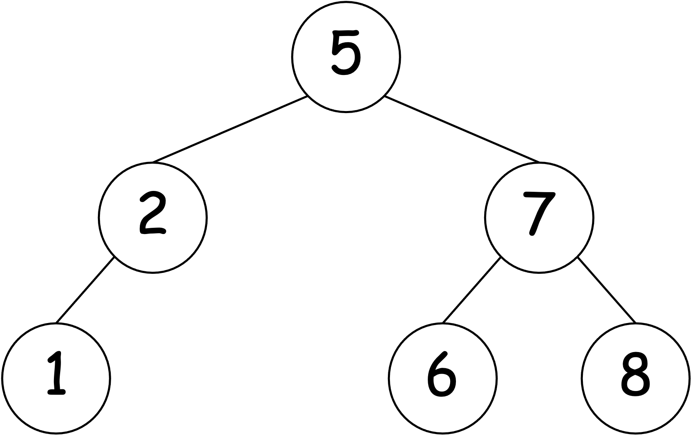
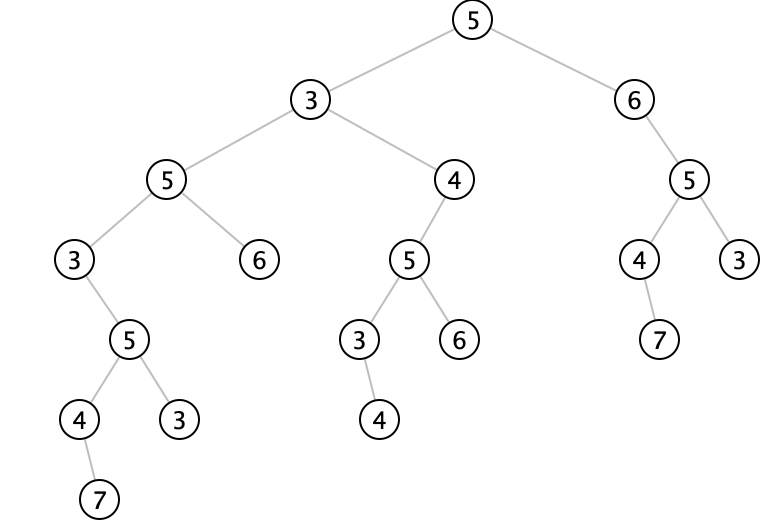
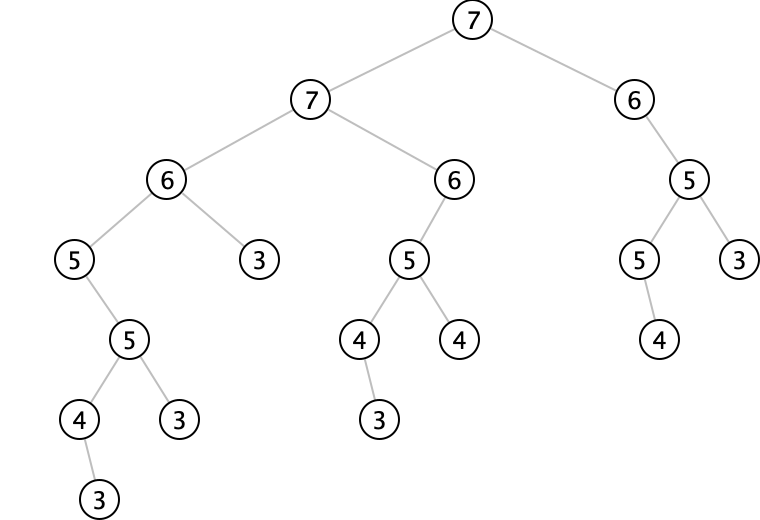
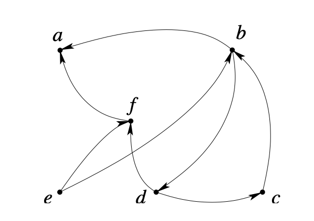

Chapitre 10 : Abstraction sur les données
Motivation
Souvent, les données et résultats d'un même problème
peuvent se représenter concrètement (en machine) de plusieurs manières,
chacune pouvant avoir ses avantages. Changer de structures de données
concrètes implique de nombreuses modifications éparses dans les
programmes, sauf si le programmeur a "prévu le coup".
Exemple I
On représentera le plus souvent un rationnel par une paire
d'entiers (num,den). On a deux possibilités : n'admettre que la forme
réduite (dénominateur positif, numérateur et dénominateur premiers entre
eux) ou autoriser aussi les formes non réduites. Dans le premier cas, il faut
décider si la réduction a lieu dès que le rationnel est construit, ou
seulement quand il est utilisé et/ou affiché.
Exemple II
On représentera le plus souvent un polynôme tel que
$3x^5+2x^3-4x-7$ par une liste :
(3 0 2 0 -4 -7), ou((5 . 3) (3 . 2) (1 . -4) (0 . 7))
La première solution est préférable pour les polynômes "pleins", la
seconde pour les polynômes "creux".
Conclusion
Mieux vaut laisser toutes les possibilités ouvertes, et
minimiser et localiser au mieux les fragments de programmes dépendant
de la représentation adoptée
Principe
On peut manipuler les listes au moyen d'un constructeur cons et
d'accesseurs car et cdr, sans savoir comment ces procédures
(et les listes elles-mêmes) sont réalisées.
L'utilisateur peut aussi définir "axiomatiquement" des données abstraites,
en fixant d'abord les primitives : constructeur(s) et accesseur(s) ; ces
données sont alors réalisées en programmant les primitives.
On peut imaginer par exemple les rationnels abstraits, basés sur le
constructeur make-ratl et les accesseurs numr et denr.
On sait que, si $n$ et
$d$ sont des entiers $(d \neq 0)$, (make-ratl n d)
est un rationnel égal à $n/d$ ;
d'autre part, si $r$ est un rationnel, alors les valeurs de (numr r)
et (denr r)
sont les numérateur et dénominateur d'une fraction (réduite où non)
correspondant à $r$.
On considère séparément les problèmes d'utilisation des rationnels (via le
constructeur make-ratl et les accesseurs numr et denr) et le problème de la
réalisation de ces derniers (en termes de primitives Scheme).
On peut faire de même pour les polynômes. Un polynôme est, soit le
polynôme nul, soit la somme d'un monôme (degré et coe
Manipulation de rationnels abstraits I
Ces programmes seront valables, que l'on travaille avec des fractions
réduites ou non, et quel que soit le mode de représentation d'une fraction.
(define rzero?
(lambda (rtl) (zero? (numr rtl))))
(define r+
(lambda (x y)
(make-ratl (+ (* (numr x) (denr y)) (* (numr y) (denr x)))
(* (denr x) (denr y)))))
(define r*
(lambda (x y)
(make-ratl (* (numr x) (numr y))
(* (denr x) (denr y)))))
(define r-
(lambda (x y)
(make-ratl (- (* (numr x) (denr y)) (* (numr y) (denr x)))
(* (denr x) (denr y)))))
Manipulation de rationnels abstraits II
(define rinvert
(lambda (rtl)
(if (rzero? rtl)
(error "rinvert: Cannot invert " rtl)
(make-ratl (denr rtl) (numr rtl)))))
(define r/ (lambda (x y) (r* x (rinvert y))))
(define r=
(lambda (x y) (= (* (numr x) (denr y)) (* (numr y) (denr x)))))
(define rpositive?
(lambda (rtl)
(or (and (positive? (numr rtl)) (positive? (denr rtl)))
(and (negative? (numr rtl)) (negative? (denr rtl))))))
(define r> (lambda (x y) (rpositive? (r- x y))))
Manipulation de rationnels abstraits III
(define max
(lambda (x y)
(if (> x y) x y)))
(define rmax
(lambda (x y)
(if (r> x y) x y)))
(define extreme-value
(lambda (pred x y)
(if (pred x y) x y)))
(define rprint
(lambda (rtl)
(writeln (numr rtl) "/" (denr rtl)))
Représentation de rationnels abstraits I
- Fractions non réduites
- Réalisation en listes
(12 18) et (2 3) sont deux représentations correctes du rationnel $\frac{2}{3}$.
(define numr (lambda (rtl) (car rtl)))
(define denr (lambda (rtl) (cadr rtl)))
(define make-ratl
(lambda (int1 int2)
(if (zero? int2)
(error "make-ratl: The denominator cannot be zero.")
(list int1 int2))))
- Avantage : procédures efficace.
- Inconvénient : pas de forme normale unique.
Représentation de rationnels abstraits II
- Fractions non réduites
- Réalisation en paires pointées
(12 . 18) et (2 . 3) sont deux représentations correctes du rationnel $\frac{2}{3}$.
(define numr (lambda (rtl) (car rtl)))
(define denr (lambda (rtl) (cdr rtl)))
(define make-ratl
(lambda (int1 int2)
(if (zero? int2)
(error "make-ratl: The denominator cannot be zero.")
(cons int1 int2))))
- Remarque : La représentation en paires pointées est plus économique,
et donc préférable à la représentation en listes.
Représentation de rationnels abstraits III
- Fractions réduites
- Réalisation en paires pointées
Première technique : changer le constructeur
(define make-ratl
(lambda (int1 int2)
(if (zero? int2)
(error "make-ratl: The denominator cannot be zero.")
(let ((g (gcd int1 int2)))
(cons (/ int1 g) (/ int2 g))))))
Représentation de rationnels abstraits IV
- Fractions réduites
- Réalisation en paires pointées
Deuxième technique : changer les accesseurs
(define numr (lambda (rtl) (/ (car rtl) (gcd (car rtl) (cdr rtl)))))
(define denr (lambda (rtl) (/ (cdr rtl) (gcd (car rtl) (cdr rtl)))))
L'intervention de gcd (réduction) introduit une certaine perte d'efficacité, le plus souvent acceptable.
La première technique (construction lente, accès rapide) est préférable si on accède souvent aux mêmes nombres.
Le type abstrait "polynôme"
Type récursif ; un polynôme comporte : un degré, un coefficient du terme de plus haut degré, un
reste (qui est un polynôme).
Le type abstrait "polynôme" comportera donc une constante de base (polynôme nul), un constructeur à trois
arguments et trois accesseurs à un argument.
Constante de base : the-zero-poly
Un constructeur (trois arguments) : poly-cons
Trois accesseurs : degree, lead-coeff, rest-poly
On distinguera les problèmes d'utilisation du type "polynôme" et le problème de réalisation
de ce type. Le second problème revient à programmer la constante de base,
le constructeur et les accesseurs.
Polynôme nul et monômes
Reconnaisseur pour la constante de base :
(define zero-poly?
(lambda (poly)
(and (zero? (degree poly)) (zero? (lead-coef poly)))))
Un monôme est un polynôme de reste nul :
(define make-mono
(lambda (deg coef) (poly-cons deg coef the-zero-poly)))
Le monôme principal d'un polynôme est son monôme de degré le plus élevé (égal au degré du polynôme) :
(define lead-mono
(lambda (poly) (make-mono (degree poly) (lead-coef poly))))
Addition de polynômes
(define p+
(lambda (poly1 poly2)
(cond ((zero-poly? poly1) poly2)
((zero-poly? poly2) poly1)
(else
(let ((n1 (degree poly1)) (n2 (degree poly2))
(a1 (lead-coef poly1)) (a2 (lead-coef poly2))
(r1 (rest-poly poly1)) (r2 (rest-poly poly2)))
(cond ((> n1 n2) (poly-cons n1 a1 (p+ r1 poly2)))
((< n1 n2) (poly-cons n2 a2 (p+ poly1 r2)))
(else (poly-cons n1 (+ a1 a2) (p+ r1 r2)))))))))
Multiplication de polynômes
(define p*
(letrec
((t* (lambda (mono poly)
(if (zero-poly? poly)
the-zero-poly
(poly-cons
(+ (degree mono) (degree poly))
(* (lead-coef mono) (lead-coef poly))
(t* mono (rest-poly poly)))))))
(lambda (poly1 poly2)
(if (zero-poly? poly1)
the-zero-poly
(p+ (t* (lead-mono poly1) poly2)
(p* (rest-poly poly1) poly2))))))
(define negative-poly
(lambda (poly) (p* (make-mono 0 -1) poly)))
(define p-
(lambda (poly1 poly2) (p+ poly1 (negative-poly poly2))))
Evaluation de polynômes
(define poly-value
(lambda (poly num)
(let ((n (degree poly)))
(if (zero? n)
(lead-coef poly)
(let ((rest (rest-poly poly)))
(if (< (degree rest) (sub1 n))
(poly-value
(poly-cons (sub1 n) (* num (lead-coef poly)) rest)
num)
(poly-value
(poly-cons
(sub1 n)
(+ (* num (lead-coef poly)) (lead-coef rest))
(rest-poly rest))
num)))))))
Première réalisation (constante, accesseurs)
$2x^3+3x-1$ devient (2 0 3 -1)
$2x^1000+3x-1$ devient (2 0 ... 0 3 -1) (1001 termes !)
(define the-zero-poly '(0))
(define degree (lambda (poly) (sub1 (length poly))))
(define lead-coef (lambda (poly) (car poly)))
(define rest-poly
(lambda (poly)
(cond ((zero? (degree poly)) the-zero-poly)
((zero? (lead-coef (cdr poly))) (rest-poly (cdr poly)))
(else (cdr poly)))))
Première réalisation (constructeur)
(define poly-cons
(lambda (deg coef poly)
(let ((dp (degree poly)))
(cond ((and (zero? deg) (equal? poly the-zero-poly))
(list coef))
((< dp deg)
(if (zero? coef)
poly
(cons coef
(append (lz (sub1 (- deg dp))) poly))))
(else
(error "poly-cons: Degree too high in" poly))))))
(define lz (lambda (n) (if (zero? n) '() (cons 0 (lz (sub1 n))))))
Seconde réalisation (constante, accesseurs)
$2x^3+3x-1$ devient ((3 2) (1 3) (0 -1))
$2x^1000+3x-1$ devient ((1000 2) (1 3) (0 -1))
(define the-zero-poly '((0 0)))
(define degree (lambda (poly) (caar poly)))
(define lead-coef (lambda (poly) (cadar poly)))
(define rest-poly
(lambda (poly)
(if (null? (cdr poly)) the-zero-poly (cdr poly))))
Seconde réalisation (constructeur)
(define poly-cons
(lambda (deg coef poly)
(let ((dp (degree poly)))
(cond
((and (zero? deg) (equal? poly the-zero-poly))
(list (list deg coef)))
((< dp deg)
(if (zero? coef) poly (cons (list deg coef) poly)))
(else
(error "poly-cons: degree too high in" poly))))))
Entrée / sortie, conversion I
(define digits->poly ;; liste de coefficients vers polynôme
(lambda (digit-list)
(if (null? digit-list)
(error "digits->poly: Not defined for" digit-list)
(letrec
((make-poly
(lambda (deg ls)
(if (null? ls)
the-zero-poly
(poly-cons deg
(car ls)
(make-poly (sub1 deg) (cdr ls)))))))
(make-poly (sub1 (length digit-list)) digit-list)))))
Le résultat affiché dépend du mode de représentation mais le texte du programme n'en dépend pas.
> (digits->poly '(1 2 3 4)) ;; avec la première version
(1 2 3 4)
> (digits->poly '(1 2 3 4)) ;; avec la deuxième version
((3 1) (2 2) (1 3) (0 4))
Entrée / sortie, conversion II
(define poly->digits ;; polynôme vers liste de coefficients
(lambda (poly)
(letrec
((convert
(lambda (p d)
(cond
((zero? d)
(list (lead-coef p)))
((= (degree p) d)
(cons (lead-coef p) (convert (rest-poly p) (sub1 d))))
(else
(cons 0 (convert p (sub1 d))))))))
(convert poly (degree poly)))))
La donnée entrée dépend du mode de représentation mais le texte du programme n'en dépend pas.
> (poly->digits '(1 2 3 4)) ;; avec la première version
(1 2 3 4)
> (poly->digits '((3 1) (2 2) (1 3) (0 4))) ;; avec la deuxième version
(1 2 3 4)
Changement de base numérique I
Conversion entre décimal et "n-aire codé décimal".
(define n-ary->dec
(lambda (n digits) (poly-value (digits->poly digits) n)))
(define dec->n-ary
(lambda (n num)
(letrec
((dec->bin
(lambda (m d)
(if (zero? m)
the-zero-poly
(p+ (make-mono d (remainder m n))
(dec->bin (quotient m n) (add1 d)))))))
(poly->digits (dec->bin num 0)))))
;; 256 = 1*2^8 = 9*27 + 13
> (dec->n-ary 2 256)
(1 0 0 0 0 0 0 0 0)
> (n-ary->dec 2 '(1 0 0 0 0 0 0 0 0))
256
> (dec->n-ary 27 256)
(9 13)
> (n-ary->dec 27 '(9 13))
256
Changement de base numérique II
Conversion de p-aire en q-aire (codés décimal)
(define p-ary->q-ary
(lambda (p q digits)
(dec->n-ary q (n-ary->dec p digits))))
> (p-ary->q-ary 27 2 '(9 13))
(1 0 0 0 0 0 0 0 0)
> (p-ary->q-ary 2 27 '(1 0 0 0 0 0 0 0 0))
(9 13)
Autre exemple : $5 * 13^3 +3*13^2 +1 = 2*17^3 +5*17^2 +13*17+1 = 11493$.
> (p-ary>q-ary 13 17 '(5 3 0 1))
(2 5 13 1)
Arbres binaires complètement étiquetés I
Un K-arbre binaire complètement étiqueté est soit l'arbre vide, soit un triplet comportant une clef ("key")
élément de K, un sous-arbre de gauche et un sous-arbre de droite. On aura donc un constructeur sans argument pour
l'arbre vide et un constructeur à trois arguments pour les arbres non vides ; on aura également trois accesseurs.
Exemple, $K = \mathbb{N}$
Représentation concrète simple : liste de trois éléments.
(define conc-tree '(4 (2 (1 () ()) ()) (5 (3 () ()) (7 () ()))))
Arbres binaires complètement étiquetés II
(define conc-tree '(4 (2 (1 () ()) ()) (5 (3 () ()) (7 () ()))))
| | | | | | | | | |||
| | --------- | | --------- ---------||
| ---------------- -----------------------|
--------------------------------------------
Arbres binaires complètement étiquetés III
Constructeurs :
(define mk-e-tree (lambda () '()))
(define mk-k-tree (lambda (k l r) (list k l r)))
Reconnaisseurs :
(define e-tree? null?)
(define k-tree?
(lambda (x) ;; x est un objet quelconque
(and (pair? x) (key? (car x))
(pair? (cdr x)) (ek-tree? (cadr x))
(pair? (cddr x)) (ek-tree? (caddr x))
(null? (cdddr x)))))
(define ek-tree? (lambda (x) (or (e-tree? x) (k-tree? x))))
(define key? (lambda (x) (and (integer? x) (>= x 0))))
Accesseurs :
(define key car)
(define left cadr)
(define right caddr)
Arbres binaires complètement étiquetés IV
Représentations concrète et abstraite :
(define conc-tree '(4 (2 (1 () ()) ()) (5 (3 () ()) (7 () ()))))
(define abst-tree
(mk-k-tree 4
(mk-k-tree 2
(mk-k-tree 1
(mk-e-tree)
(mk-e-tree))
(mk-e-tree))
(mk-k-tree 5
(mk-k-tree 3
(mk-e-tree)
(mk-e-tree))
(mk-k-tree 7
(mk-e-tree)
(mk-e-tree)))))
Arbres binaires complètement étiquetés V
Présence d'un nombre entier donné dans un $\mathbb{N}$-arbre donné :
(define in-tree?
(lambda (i tr)
(if (e-tree? tr)
#f
(or (= i (key tr))
(in-tree? i (left tr))
(in-tree? i (right tr))))))
Ceci peut se récrire en :
(define in-tree?
(lambda (i tr)
(and (not (e-tree? tr))
(or (= i (key tr))
(in-tree? i (left tr))
(in-tree? i (right tr))))))
Arbres binaires conditionnés I
Un arbre non vide est dit conditionné ou ordonné si la clef de tout nœud interne est plus
grande ou égale aux clefs de tous ses descendants de gauche, et plus petite ou égale aux clefs de tous ses
descendants de droite.
Deux écueils à éviter :
- L'approche "naïve" : Un arbre non vide serait conditionné si la clef de la racine est comprise entre les
clefs des deux fils (s'il existent) et si les deux sous-arbres fils sont eux-mêmes conditionnés. La
condition est nécessaire mais pas suffisante (voir exemple) ! ! !
- L'approche "prudente" : un arbre non vide serait conditionné si la clef de la racine est supérieure à tous
ses descendants de gauche et inférieure à tous ses descendants de droite et si les deux sous-arbres fils
sont eux-mêmes conditionnés. La méthode est inefficace, parce que les mêmes comparaisons sont répétées
plusieurs fois.
En fait, un arbre est conditionné si ses deux fils sont conditionnés et si sa racine est supérieure à tous les
éléments de la branche la plus à droite du fils gauche, et inférieure à tous les éléments de la branche la plus
à gauche du fils droit.
Arbres binaires conditionnés II
Les prédicats auxiliaires greq? et leeq? testent les deux dernières conditions.
(define greq?
(lambda (n tr)
(or (e-tree? tr) (and (>= n (key tr)) (greq? n (right tr))))))
(define leeq?
(lambda (n tr)
(or (e-tree? tr) (and (<= n (key tr)) (leeq? n (left tr))))))
(define condit-1?
(lambda (tr)
(or (e-tree? tr)
(and (condit-1? (left tr)) (greq? (key tr) (left tr))
(condit-1? (right tr)) (leeq? (key tr) (right tr))))))
Ce programme n'est pas optimal ; une version plus efficace est possible si on dispose d'une borne supérieure *max*
absolue pour les étiquettes des arbres.
Arbres binaires conditionnés III

> (condit-1? '(4 (2 (1 () ()) ()) (5 (3 () ()) (7 () ()))))
#f

> (condit-1? '(5 (2 (1 () ()) ()) (7 (6 () ()) (8 () ()))))
#t
Arbres binaires conditionnés IV
Version efficace :
(define condit-2?
(lambda (tr) (or (e-tree? tr) (tree-ok? 0 tr *max*))))
(define tree-ok?
(lambda (min tr max)
(and (<= min (key tr))
(>= max (key tr))
(or (e-tree? (left tr)) (tree-ok? min (left tr) (key tr)))
(or (e-tree? (right tr)) (tree-ok? (key tr) (right tr) max)))))
tr est un arbre conditionné dont toutes
les clefs sont comprises entre les naturels min et max
ssi (tree-ok? min tr max) est vrai.
Arbres binaires conditionnés V
Si un arbre est conditionné, la liste de ses étiquettes est triée, à condition que dans cette liste toute
étiquette se trouve entre les étiquettes de ses descendants de gauche et celles de ses descendants de droite.
La fonction traversal calcule cette liste :
(define traversal
(lambda (tr)
(if (e-tree? tr)
'()
(append (traversal (left tr))
(cons (key tr)
(traversal (right tr)))))))
> (traversal '(5 (2 (1 () ()) ()) (7 (6 () ()) (8 () ()))))
(1 2 5 6 7 8)
Arbres binaires conditionnés VI
On peut utiliser la technique des accumulateurs pour éviter l'usage de append, en écrivant une fonction auxiliaire trav-a telle que [[(trav-a tr acc)]] soit égal à [[(append (traversal tr) acc)]].
(define trav-a
(lambda (tr acc)
(if (e-tree? tr)
acc
(trav-a (left tr)
(cons (key tr)
(trav-a (right tr) acc))))))
(define traversal
(lambda (tr) (trav-a tr '())))
Arbres, tas et tri I
Une arbre est un tas si l'étiquette d'un nœud est supérieure aux étiquettes de ses descendants. La notion de tas est
utile dans diverses applications. Le programme heap? teste si un arbre est un tas ("heap" en anglais) ;
il est analogue au programme condit-2.
Les règles de portée empêchent toute confusion entre les liaisons locales et globales de key,
left et right ; les liaisons locales sont des arbres, les liaisons globales sont des
accesseurs.
(define heap?
(lambda (tr)
(or (e-tree? tr)
(let ((key (key tr)) (left (left tr)) (right (right tr)))
(and (greq? key left) (greq? key right)
(heap? left) (heap? right))))))
; (greq? n tr) : (or (e-tree? tr) (>= n (key tr))
Arbres, tas et tri II
Transformation d'un arbre en un tas
(define adjust
(lambda (ky lh rh)
(cond
((and (greq? ky lh) (greq? ky rh)) (mk-k-tree ky lh rh))
((greq? ky lh)
(let ((krh (key rh)) (lrh (left rh)) (rrh (right rh)))
(mk-k-tree krh lh (adjust ky lrh rrh))))
((greq? ky rh)
(let ((klh (key lh)) (llh (left lh)) (rlh (right lh)))
(mk-k-tree klh (adjust ky llh rlh) rh)))
(else
(let ((klh (key lh)) (krh (key rh)))
(let ((llh (left lh)) (rlh (right lh))
(lrh (left rh)) (rrh (right rh)))
(if (> klh krh)
(mk-k-tree klh (adjust ky llh rlh) rh)
(mk-k-tree krh lh (adjust ky lrh rrh)))))))))
Arbres, tas et tri III
Transformation d'un arbre en un tas
(define heapify
(lambda (tr)
(if (e-tree? tr)
tr
(let ((key (key tr)) (left (left tr)) (right (right tr)))
(let ((lh (heapify left)) (rh (heapify right)))
(adjust key lh rh))))))
> (heapify '(5 (2 (1 () ()) ()) (7 (6 () ()) (8 () ()))))
(8 (2 (1 () ()) ()) (7 (6 () ()) (5 () ())))
> (adjust 9 '(3 () (4 () ())) '(6 () ()))
(9 (3 () (4 () ())) (6 () ()))
> (adjust 5 '(3 () (4 () ())) '(6 () ()))
(6 (3 () (4 () ())) (5 () ()))
> (adjust 2 '(3 () (4 () ())) '(6 () ()))
(6 (3 () (4 () ())) (2 () ()))
Arbres, tas et tri IV
Si dans la liste des étiquettes d'un tas, l'étiquette d'un nœud vient toujours avant
l'étiquette des descendants de
ce nœud, alors la liste est "presque" triée par ordre décroissant.
Une variante du prédicat traversal permet de le
vérifier. Nous écrivons cette variante en utilisant un letrec et un accumulateur :
(define pre-trav
(lambda (tr)
(letrec
((pre-trav-a
(lambda (tr acc)
(if (e-tree? tr)
acc
(cons (key tr)
(pre-trav-a (left tr) (pre-trav-a (right tr) acc)))))))
(pre-trav-a tr '()))))
Exercice : spécifier la fonction auxiliaire
Arbres, tas et tri V
Considérons l'arbre dont la représentation concrète est
(5 (3 (5 (3 () (5 (4 () (7 () ())) (3 () ()))) (6 () ()))
(4 (5 (3 () (4 () ())) (6 () ())) ()))
(6 () (5 (4 () (7 () ())) (3 () ()))))
heapify transforme cet arbre en le tas
(7 (7 (6 (5 () (5 (4 () (3 () ())) (3 () ()))) (3 () ()))
(6 (5 (4 () (3 () ())) (4 () ())) ()))
(6 () (5 (5 () (4 () ())) (3 () ()))))
qui a même structure ; pre-trav fournit les listes
(3 4 7 5 3 5 6 3 3 4 5 6 4 5 6 4 7 5 3)
(7 7 6 5 5 4 3 3 3 6 5 4 3 4 6 5 5 4 3)
alors que la version triée de ces deux listes est
(7 7 6 6 6 5 5 5 5 5 4 4 4 4 3 3 3 3 3)


Ceci suggère qu'il devrait exister une variante de pre-trav qui, appliquée à
un tas, fournirait la liste triée des étiquettes de ce tas.
Arbres, tas et tri VI
(define hp-sort-trav ;; liste triée des étiquettes
(lambda (hp)
(if (e-tree? hp)
'()
(let ((u1 (hp-sort-trav (left hp)))
(u2 (hp-sort-trav (right hp))))
(cons (key hp) (merge u1 u2))))))
(define merge ;; fusion de deux listes triées
(lambda (u1 u2)
(cond ((null? u1) u2)
((null? u2) u1)
(else (let ((a1 (car u1)) (a2 (car u2)))
(if (> a1 a2)
(cons a1 (merge (cdr u1) u2))
(cons a2 (merge u1 (cdr u2)))))))))
Cette technique de tri est raisonnablement efficace.
Visualisation de la structure des arbres
(define space ;; (space n) ecrit n blancs
(lambda (n)
(if (zero? n)
(display "")
(begin (display " ") (space (- n 1))))))
(define add1 (lambda (x) (+ x 1)))
(define pr-tree-iter
(lambda (tr d)
(if (e-tree? tr)
(begin (space d) (display " -"))
(let ((d1 (add1 d)))
(begin (space d1) (display (key tr))
(newline) (pr-tree-iter (left tr) d1)
(newline) (pr-tree-iter (right tr) d1))))))
(define pr-tree (lambda (tr) (pr-tree-iter tr 0)))
Cette technique de tri est raisonnablement efficace.
Enregistrements, réalisation concrète I
Les $K$-arbres binaires complètement étiquetés sont des cas particuliers d'enregistrements. Un enregistrement est une
structure de donnée admettant un nombre fixé de composants, chacun d'eux ayant un type donné.
Le reconnaisseur record? prend comme arguments un objet [[u]]
et une liste de propriétés [[lp]]
et renvoie #t si [[u]] et [[lp]]
sont des listes de même longueur $l$ et si pour tout $i = 1,...,l$, le ième objet de
[[u]] satisfait la ième propriété de [[lp]].
Remarque. Une propriété est ici un prédicat à un argument.
Une solution simple et efficace est
(define record?
(lambda (u lp)
(or (and (null? u) (null? lp))
(and (pair? u) (pair? lp) ((car lp) (car u))
(record? (cdr u) (cdr lp))))))
Enregistrements, réalisation concrète II
Le reconnaisseur k-tree? introduit plus haut, à savoir
(define k-tree?
(lambda (x) ;; x est un objet quelconque
(and (pair? x) (key? (car x))
(pair? (cdr x)) (ek-tree? (cadr x))
(pair? (cddr x)) (ek-tree? (caddr x))
(null? (cdddr x)))))
; remember: (define e-tree? null?)
; remember: (define ek-tree? (lambda (x) (or (e-tree? x) (k-tree? x))))
; remember: (define key? (lambda (x) (and (integer? x) (>= x 0))))
pourrait aussi se définir en utilisant record? :
(define k-tree?
(lambda (u)
(record? u
(list (lambda (x) (and (integer? x) (>= x 0)))
(lambda (v) (or (null? v) (k-tree? v)))
(lambda (v) (or (null? v) (k-tree? v)))))))
Les graphes I
(define *g0*
'((a b c d e f) .
((b . a) (b . d) (c . b) (d . c)
(d . f) (e . b) (e . f) (f . a))))

(define mk-graph (lambda (nodes arcs) (cons nodes arcs)))
(define nodes (lambda (gr) (car gr)))
(define arcs (lambda (gr) (cdr gr)))
(define mk-arc (lambda (org ext) (cons org ext)))
(define org (lambda (arc) (car arc)))
(define ext (lambda (arc) (cdr arc)))
Les graphes II
Successeurs d'un nœud dans un graphe
(define succs
(lambda (nd gr)
(let ((nodes (nodes gr)) (arcs (arcs gr)))
(if (member nd nodes)
(succs-arcs nd arcs)
(error "unknown node" nd)))))
(define succs-arcs
(lambda (nd arcs)
(cond ((null? arcs) '())
((equal? (org (car arcs)) nd)
(add-elem (ext (car arcs)) (succs-arcs nd (cdr arcs))))
(else (succs-arcs nd (cdr arcs))))))
(define add-elem
(lambda (x l) (if (member x l) l (cons x l))))
> (succs 'a *g0*)
()
> (succs 'b *g0*)
(a d)
Les graphes III
Descendance d'un noeud dans un graphe, version très naive car la terminaison n'est pas garantie !
Pourquoi?
(define naive_offspring
(lambda (nd gr)
(add-elem nd (naive_offspring* (succs nd gr) gr))))
(define naive_offspring*
(lambda (nd* gr)
(if (null? nd*)
'()
(union (naive_offspring (car nd*) gr) (naive_offspring* (cdr nd*) gr)))))
Attention : petites fautes dans le livre aux niveau des parenthèses.
Les graphes IV
Descendance d'un noeud dans un graphe, version naive :
(define offspring
(lambda (nd gr) (off nd gr (length (nodes gr)))))
(define off
(lambda (nd gr k)
(if (= k 0) '() (add-elem nd (off* (succs nd gr) gr (- k 1))))))
(define off*
(lambda (nd* gr k)
(if (null? nd*)
'()
(union (off (car nd*) gr k) (off* (cdr nd*) gr k)))))
(define union
(lambda (u v)
(if (null? u) v (add-elem (car u) (union (cdr u) v)))))
> (offspring 'c *g0*)
(c b d f a)
> (succs 'b *g0*)
(a d)
Les graphes V
Descendance d'un nœud dans un graphe, deuxième solution
(define offspring-bis
(lambda (nd gr)
(off*-bis (list nd) gr '())))
(define off*-bis
(lambda (nd* gr acc)
(cond ((null? nd*) acc)
((member (car nd*) acc)
(off*-bis (cdr nd*) gr acc))
(else
(off*-bis (append (succs (car nd*) gr) (cdr nd*))
gr
(cons (car nd*) acc))))))
Les graphes VI
Une troisième version plus efficace s'obtient en éliminant l'usage de append :
(define offspring-ter
(lambda (nd gr) (off-ter nd gr '())))
(define off-ter
(lambda (nd gr acc)
(if (member nd acc) acc (off*-ter (succs nd gr) gr (cons nd acc)))))
(define off*-ter
(lambda (nd* gr acc)
(cond ((null? nd*) acc)
((member (car nd*) acc)
(off*-ter (cdr nd*) gr acc))
(else
(off-ter (car nd*)
gr
(off*-ter (cdr nd*) gr acc))))))
Les graphes VII
Essais : dans [[*g0*]], on a les arcs
c->b b->a
b->d d->c
d->f f->a
donc la descendance de [[c]] dans [[*g0*]] comporte [[a]],
[[b]], [[c]], [[d]] et [[f]].
On a effiectivement :
> (offspring 'c *g0*)
(c b d f a)
> (offspring 'c *g0*)
(f d a b c)
> (offspring-ter 'c *g0*)
(a f d b c)